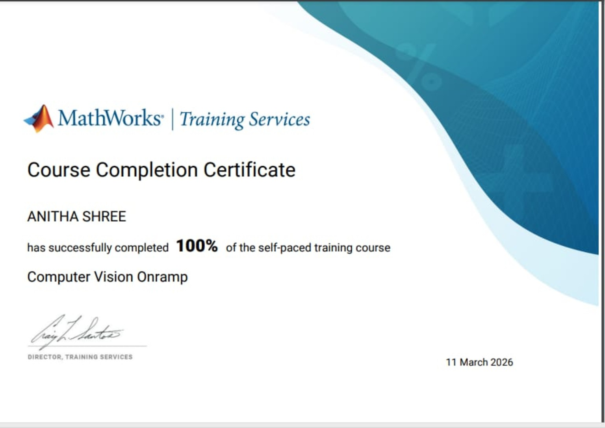
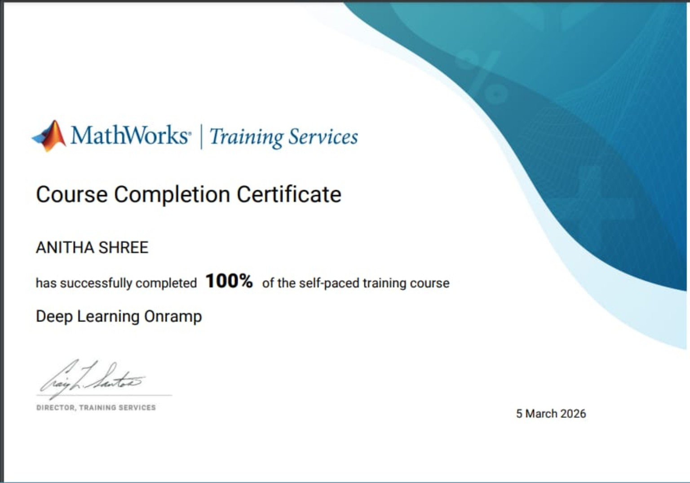
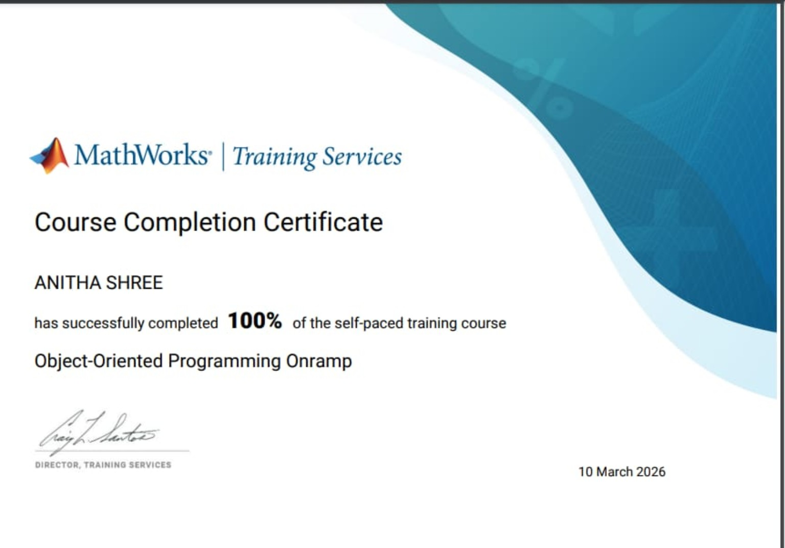
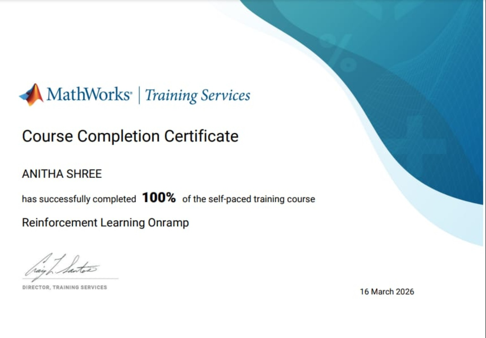
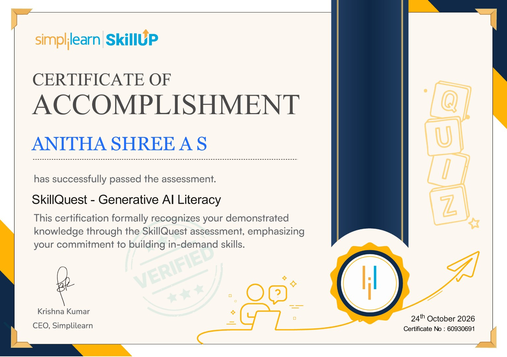
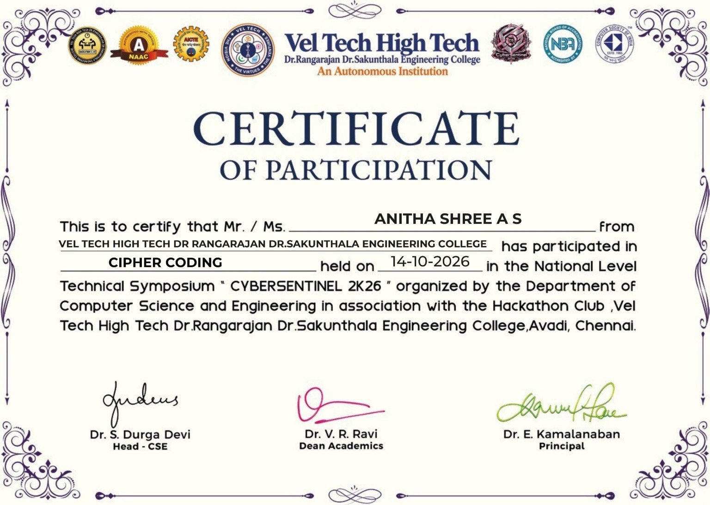
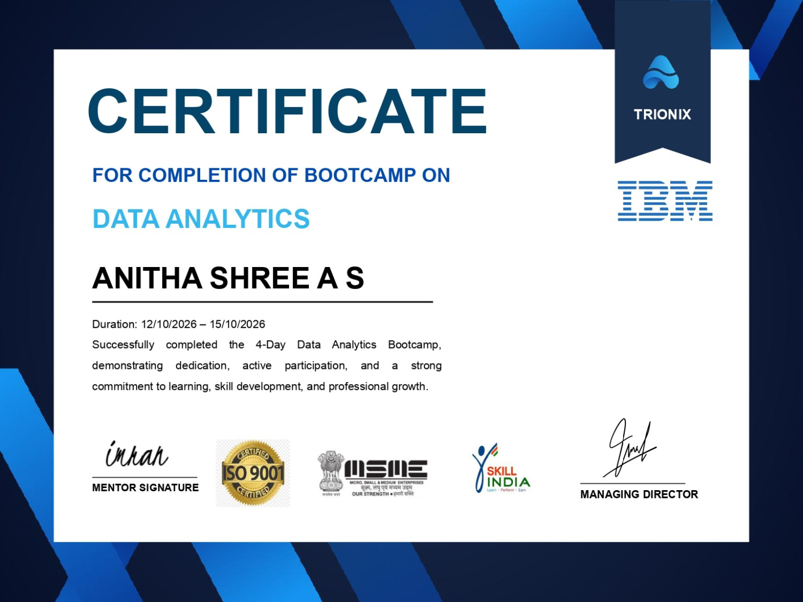

Python
Beginner
I'm a second-year Computer Science Engineering student exploring programming, web development, and Artificial Intelligence. I enjoy learning new technologies and building projects that solve real-world problems.
Building a strong engineering foundation, one concept and one project at a time.
I'm a second-year Computer Science Engineering student interested in programming, web development, and Artificial Intelligence. I enjoy learning how software works and experimenting with tools that help turn ideas into something people can use.
I'm focused on strengthening my fundamentals, exploring new technologies, and documenting my progress through practical projects. This portfolio will continue to grow as I learn.
These are the skills I'm currently learning and practising.
Beginner
Beginner
Beginner
Beginner
Beginner
Practical projects created during my learning journey.
A web project focused on supporting farmers through digital technology.
This project reflects my interest in exploring practical, real-world challenges with technology.
Visit Project ↗A collection of courses, technical learning milestones, and events completed during my learning journey.

MathWorks · Course Completion

MathWorks · Course Completion

MathWorks · Course Completion

MathWorks · Course Completion

Simplilearn SkillUp · Assessment

Vel Tech High Tech · National-Level Technical Symposium

Trionix · IBM · 4-Day Bootcamp
Select any certificate image or “View Certificate” to open the full-size certificate in a new tab.
I'm happy to connect with people interested in technology, student projects, and learning together.